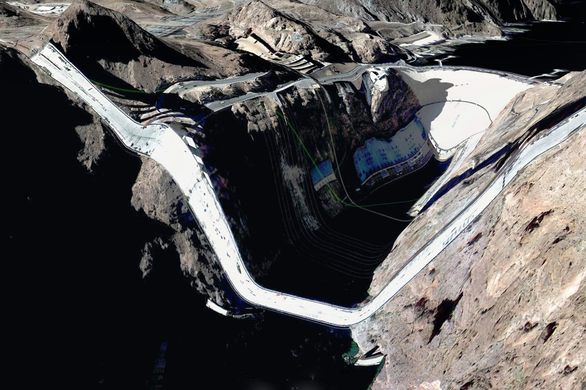
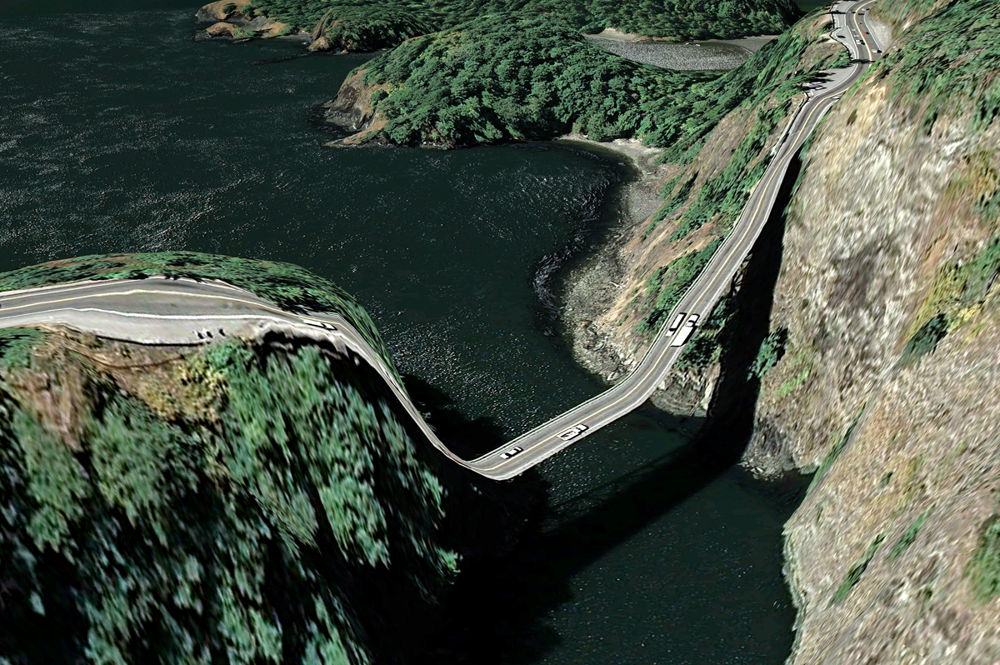
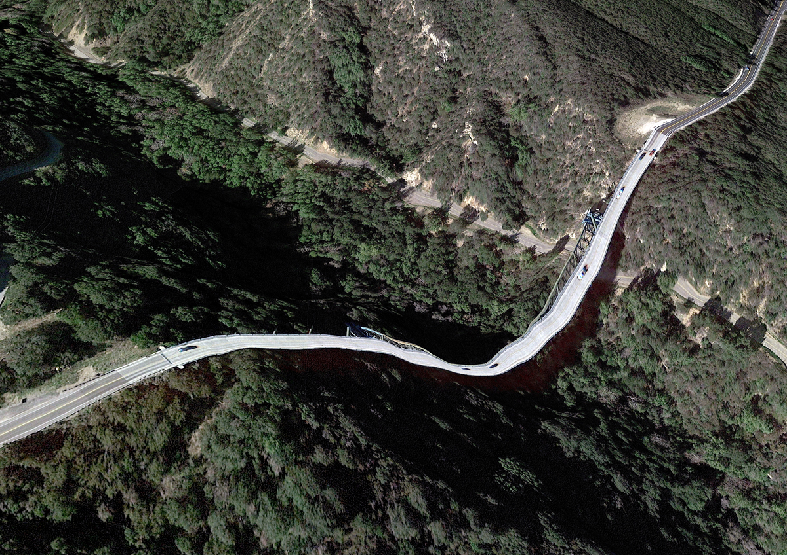
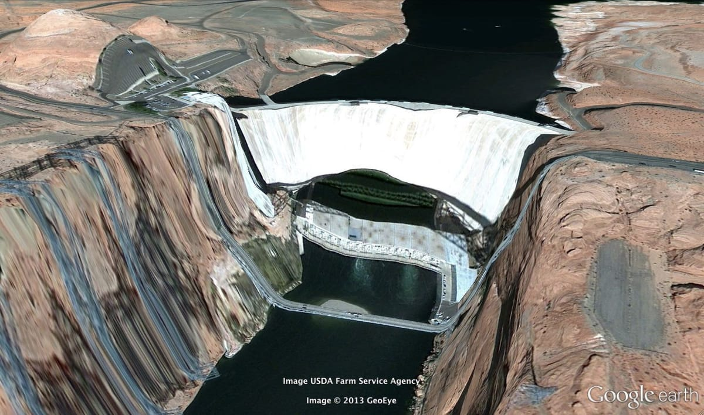
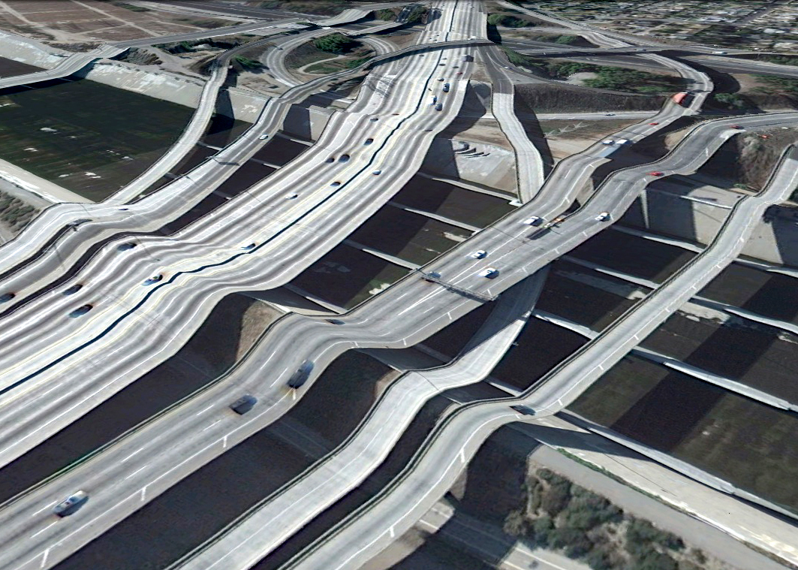
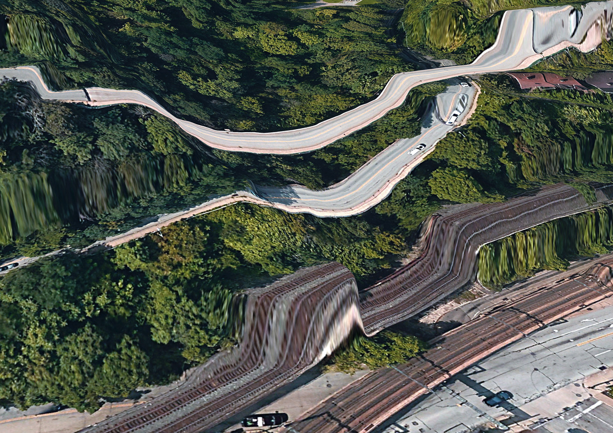
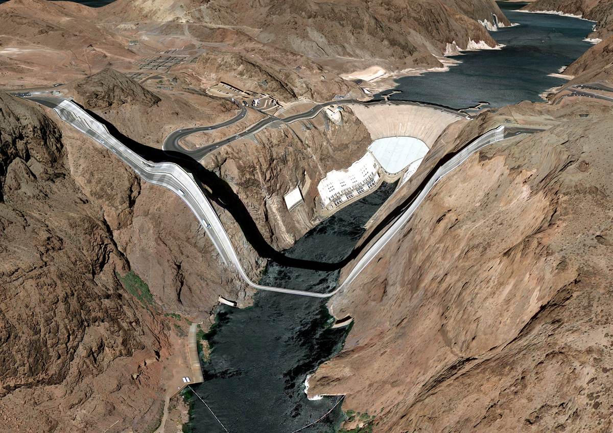

An illusion, an edge condition
Postcards from google earth (2010—) by Clement Valla
These artists (...) counter the database, understood as a structure of dehumanized power, with the collection, as a form of idiosyncratic, unsystematic, and human memory. They collect what interests them, whatever they feel can and should be included in a meaning system. They describe, critique, and finally challenge the dynamics of the database, forcing it to evolve. —Domenico Quaranta (2011), in Collect the WWWorld. The Artist as Archivist in the Internet Age


Postcards From Google Earth (2010-), by Clement Valla. The project faces reality as a simulacrum.
I collect Google Earth images. I discovered them by accident, these particularly strange snapshots, where the illusion of a seamless and accurate representation of the Earth’s surface seems to break down. I was Google Earth-ing, when I noticed that a striking number of buildings looked like they were upside down. I could tell there were two competing visual inputs here —the 3D model that formed the surface of the earth, and the mapping of the aerial photography; they didn't match up. Depth cues in the aerial photographs, like shadows and lighting, were not aligning with the depth cues of the 3D model.
The competing visual inputs I had noticed produced some exceptional imagery, and I began to find more and start a collection. At first, I thought they were glitches, or errors in the algorithm, but looking closer, I realized the situation was actually more interesting — these images are not glitches. They are the absolute logical result of the system. They are an edge condition—an anomaly within the system, a nonstandard, an outlier, even, but not an error. These jarring moments expose how Google Earth works, focusing our attention on the software. They are seams which reveal a new model of seeing and of representing our world - as dynamic, ever-changing data from a myriad of different sources – endlessly combined, constantly updated, creating a seamless illusion.

 Postcards From Google Earth (2010-), by Clement Valla. The images reveal a new model of representation: not through indexical photos but through automated data collection from different sources endlessly combined to create a seamless illusion.
Postcards From Google Earth (2010-), by Clement Valla. The images reveal a new model of representation: not through indexical photos but through automated data collection from different sources endlessly combined to create a seamless illusion.
3D Images like those in Google Earth are generated through a process called texture mapping. Texture mapping is a technology developed by Ed Catmull in the 1970's. In 3D modeling, a texture map is a flat image that gets applied to the surface of a 3D model, like a label on a can or a bottle of soda. Textures typically represent a flat expanse with very little depth of field, meant to mimic surface properties of an object. Textures are more like a scan than a photograph. The surface represented in a texture coincides with the surface of the picture plane, unlike a photograph that represents a space beyond the picture plane. This difference might be summed up another way: we see through a photograph, we look at a texture. This is an important distinction in 3D modeling, because textures are stretched across the surface of a 3D model, in essence becoming the skin for the model.
Google Earth's textures however, are not shallow or flat. They are photographs that we look through into a space represented beyond—a space our brain interprets as having three dimensions and depth. We see space in the aerial photographs because of light and shadows and because of our prior knowledge of experienced space. When these photographs get distorted and stretched across the 3D topography of the earth, we are both looking at the distorted picture plane, and through the same picture plane at the space depicted in the texture. In other words, we are looking at two spaces simultaneously. Most of the time this doubling of spaces in Google Earth goes unnoticed, but sometimes the two spaces are so different, that things look strange, vertiginous, or plain wrong. But they’re not wrong. They reveal Google’s system used to map the earth—The Universal Texture.

Postcards From Google Earth. The surface represented in a texture coincides with the surface of the picture plane, unlike a photo that represents a space beyond the picture plane.
The Universal Texture is a Google patent for mapping textures onto a 3D model of the entire globe. At its core the Universal Texture is just an optimal way to generate a texture map of the earth. As its name implies, the Universal Texture promises a god-like (or drone-like) uninterrupted navigation of our planet — not a tiled series of discrete maps, but a flowing and fluid experience. This experience is so different, so much more seamless than previous technologies, that it is an achievement quite like what the escalator did to shopping:
No invention has had the importance for and impact on shopping as the escalator. As opposed to the elevator, which is limited in terms of the numbers it can transport between different floors and which through its very mechanism insists on division, the escalator accommodates and combines any flow, efficiently creates fluid transitions between one level and another, and even blurs the distinction between separate levels and individual spaces. —Jovanovic Weiss, Srdjan and Leong, Sze Tsung, in Escalator
In the digital media world, this fluid continuity is analogous to the infinite scroll's effect on Tumblr. In Google Earth, the Universal Texture delivers a smooth, complete and easily accessible knowledge of the planet's surface. The Universal Texture is able to take a giant photo collage made up of aerial photographs from all kinds of different sources — various companies, governments, mapping institutes — and map it onto a three-dimensional model assembled from as many distinct sources. It blends these disparate data together into a seamless space - like the escalator merges floors in a shopping mall.
Our mechanical processes for creating images have habituated us into thinking in terms of snapshots - discrete segments of time and space (no matter how close together those discrete segments get, we still count in frames per second and image aspect ratios). But Google is thinking in continuity. The images produced by Google Earth are quite unlike a photograph that bears an indexical relationship to a given space at a given time. Rather, they are hybrid images, a patchwork of two-dimensional photographic data and three-dimensional topographic data extracted from a slew of sources, data-mined, pre-processed, blended and merged in real-time. Google Earth is essentially a database disguised as a photographic representation.
It is an automated, statistical, incessant, universal representation that selectively chooses its data. (For one, there is no ‘night’ in Google’s version of Earth.) The system edits a particular representation of the world. The software edits, re-assembles, processes and packages reality in order to form a very specific and useful model. These collected images feel alien, because they are clearly an incorrect representation of the earth’s surface. And it is precisely because humans did not directly create these images that they are so fascinating. They are created by an algorithm that finds nothing wrong in these moments. They are less a creation, than a kind of fact - a representation of the laws of the Universal Texture. As a collection the anomalies are a weird natural history of Google Earth’s software. They are strange new typologies, representative of a particular digital process. Typically, the illusion the Universal Texture creates makes the process itself go unnoticed, but these anomalies offer a glimpse into the data collection and assembly. They bring the diverging data sources to light. In these anomalies we understand there are competing inputs, competing data sources and discrepancy in the data. The world is not so fluid after all.


Postcards From Google Earth. We are looking at two spaces simultaneously. Most of the time this doubling of spaces in Google Earth goes unnoticed, but sometimes the two spaces are so different, that things look strange, or plain wrong. But they’re not wrong.
By capturing screenshots of these images in Google Earth, I am pausing them and pulling them out of the update cycle. I capture these images to archive them - to make sure there is a record that this image was produced by the Universal Texture at a particular time and place. As I kept looking for more anomalies, and revisiting anomalies I had already discovered, I noticed the images I had discovered were disappearing. The aerial photographs were getting updated, becoming 'flatter' – from being taken at less of an angle or having the shadows below bridges muted. Because Google Earth is constantly updating its algorithms and three-dimensional data, each specific moment could only be captured as a still image. I know Google is trying to fix some of these anomalies too – I’ve been contacted by a Google engineer who has come up with a clever fix for the problem of drooping roads and bridges. Though the change has yet to appear in the software, it’s only a matter of time.
Taking a closer look, Google’s algorithms also seem to have a way to select certain types of aerial photographs over others, so as more photographs are taken, the better ones get selected. To Google, better photographs are flatter, have fewer shadows and are taken from higher angles. Because of this progress, these strange images are being erased. I see part of my work as archiving these temporal digital typologies. I also call these images postcards to cast myself as a tourist in the temporal and virtual space - a space that exists digitally for a moment, and may perhaps never be reconstituted again by any computer.

Postcards From Google Earth. These images counter the database, understood as a structure of dehumanized power, with the collection, as a form of idiosyncratic, unsystematic, and human memory. They describe, critique, and finally challenge the dynamics of the database, forcing it to evolve.
Nothing draws more attention to the temporality of these images than the simple observation that the clouds are disappearing from Google Earth. After all, clouds obscures the surface of the planet so photos with no clouds are privileged. The Universal Texture and its attendant database algorithms are trained on a few basic qualitative traits - no clouds, high contrast, shallow depth, daylight photos. Progress in architecture has given us total control over interior environments; climate controlled spaces smoothly connected by escalators in shopping malls, airports, hotels and casinos. Progress in the Universal Texture promises to give us a smooth and continuous 24-hour, cloudless, daylit world, increasingly free of jarring anomalies, outliers and statistical inconsistency.
Clement Valla (2012), The Universal Texture, essay on the project Postcards from Google Earth